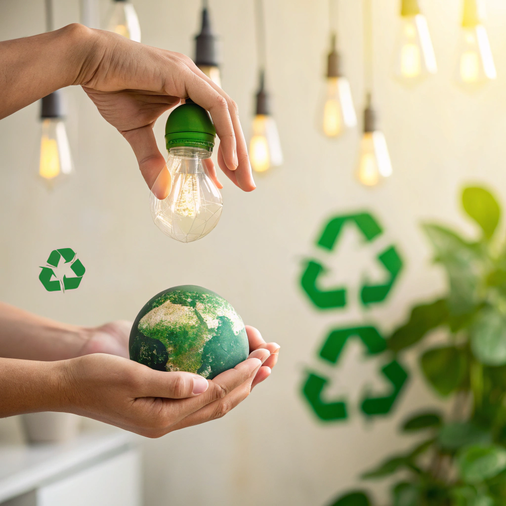
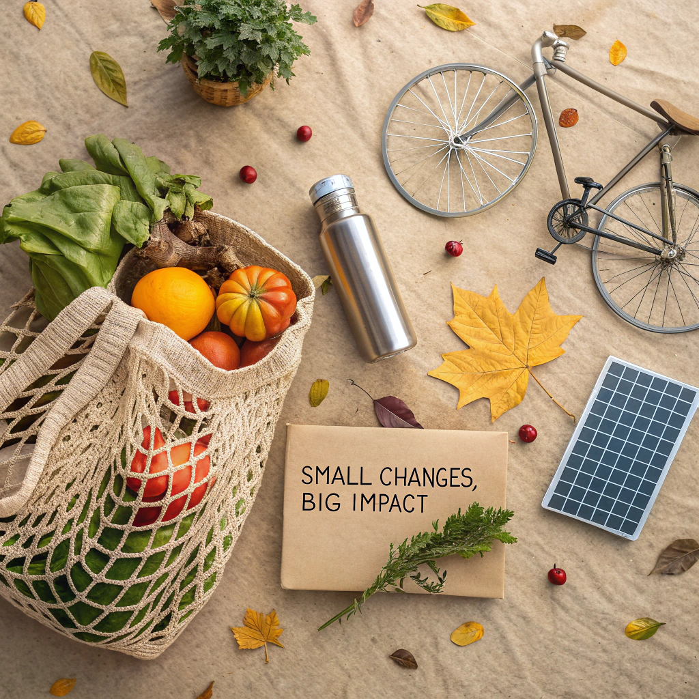
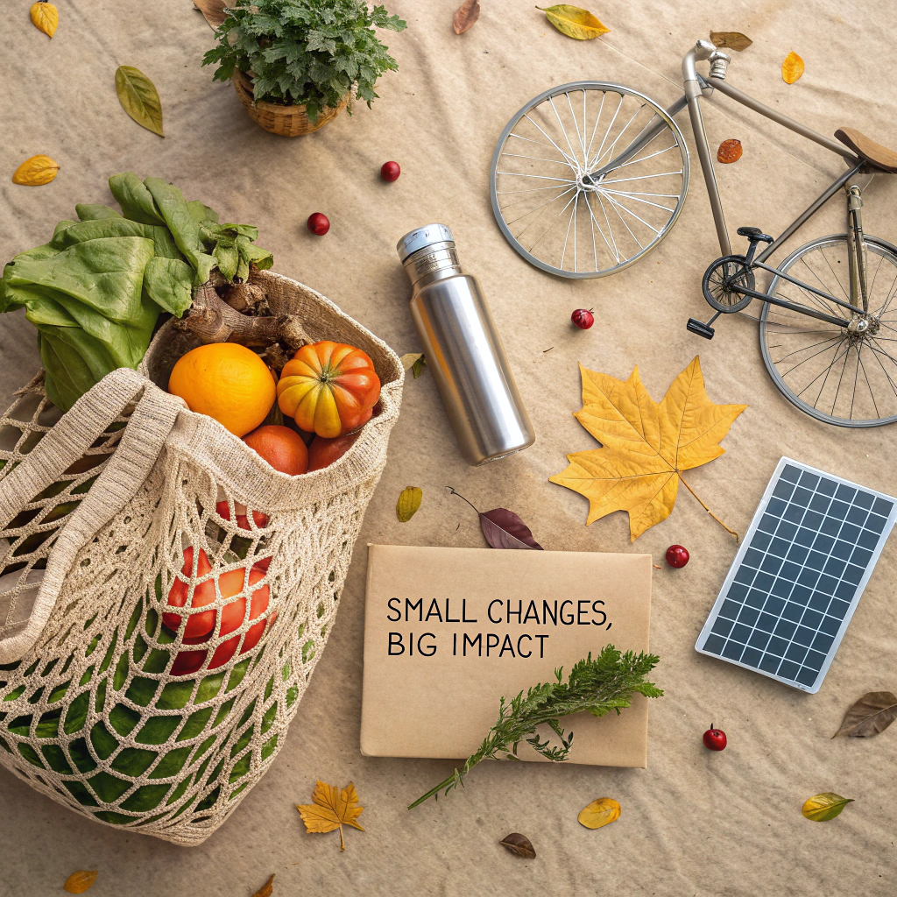

İklim Eylemi: Küçük Değişimlerle Büyük Etki
31 Temmuz 2025
İklim krizi karşısında harekete geçmek için büyük adımlar atmak zorunda değiliz. Günlük yaşamımızda yapacağımız küçük değişiklikler, bir araya geldiğinde büyük bir etki yaratabilir. İşte iklim değişikliğiyle mücadelede bireysel olarak uygulayabileceğiniz ve çevrenize ilham verebileceğiniz pratik çözümler...
Birleşmiş Milletler verilerine göre, bireysel eylemler küresel karbon emisyonlarının %60'ını oluşturan tüketim alışkanlıklarını doğrudan etkiliyor. Her birimizin yapacağı küçük değişimler büyük farklar yaratabilir.
 

Günlük Yaşamda 9 Etkili İklim Eylemi
İşte bugünden başlayarak uygulayabileceğiniz ve karbon ayak izinizi azaltacak basit ama etkili yöntemler:
Bitki Bazlı Beslenin
Haftada bir gün et tüketmeyerek yılda 170 kg karbon tasarrufu sağlayabilirsiniz.
Toplu Taşıma Kullanın
Haftada 2 gün araba yerine toplu taşıma kullanmak yılda 1.5 ton CO₂ tasarrufu demek.
Enerji Tasarrufu Yapın
LED ampuller ve A+++ cihazlarla enerji tüketiminizi %70'e varan oranda azaltın.
Bilinçli Tüketin
İkinci el alışveriş yaparak üretim kaynaklı emisyonları %80 azaltabilirsiniz.
Geri Dönüştürün
Evsel atıklarınızın %60'ını geri dönüştürerek çöp sahalarına giden atığı azaltın.
Dijital Karbonu Azaltın
Gereksiz e-postaları silerek ve bulut depolamayı azaltarak dijital karbon ayak izinizi küçültün.
Eylemlerinizin Etki Derecesi
Yapacağınız değişikliklerin iklim üzerindeki etkisini gösteren karşılaştırmalı tablo:
Araba Kullanmayı Azaltmak
Haftada 1 gün araba kullanmayarak yılda 0.5 ton CO₂ tasarrufu
Tekstil Tüketimini Azaltmak
Yılda 5 parça daha az giysi alarak 0.3 ton CO₂ tasarrufu
Gıda İsrafını Önlemek
Gıda israfını yarıya indirerek yılda 0.4 ton CO₂ tasarrufu
Evin Isı Yalıtımı
İyi yalıtımlı bir evle yılda 1.2 ton CO₂ tasarrufu

Toplumsal Etki Yaratmanın Yolları
Bireysel eylemlerinizle yetinmeyin, çevrenizdeki insanlara ilham olun:
- İş yerinizde sürdürülebilirlik programları başlatın veya destekleyin
- Yerel yönetimlerin iklim eylem planlarına katkı sağlayın
- Sosyal medyada bilinçli içerikler paylaşarak farkındalık yaratın
- Çocuklarınıza çevre bilinci aşılayın - onlar geleceğin karar vericileri
- İklim dostu işletmeleri tercih edin ve destekleyin
İklim krizi karşısında her birimizin sorumluluğu var. Büyük değişimler küçük adımlarla başlar. Bugün yapacağınız bir tercih, yarının dünyasını şekillendirecek. Unutmayın, dünyayı kurtarmak için mükemmel olmak zorunda değilsiniz, ama herkes biraz daha iyisini yapmak zorunda. Harekete geçme zamanı!